Embedded Programming
Group assignment
- Compare the performance and development workflows for other architectures.
Individual assignment
- Read a microcontroller data sheet. Program your board to do something, with as many different programming languages and programming environments as possible.
Learning outcomes:
- Identify relevant information in a microcontroller data sheet.
- Implement programming protocols.
Have you:
- Documented what you learned from reading a microcontroller datasheet.
- What questions do you have? What would you like to learn more about?
- Programmed your board
- Described the programming process/es you used
- Included your code
Week workflow
Tools used
- Soldering station
- USBtiny ISP
Software Used
- AVRdude
- Arduino IDE
Group Assignment
Go to the group assignment page
Introduction
Read the Datasheet
A few thoughts about it:
- Are you joking? 200 plus pages of very technical stuff!
- Slept on the first pages
- Is there a movie version?
One a more serious note, I really think this assignment is one of the hardest. I'm stuck because of this datasheet.
Will jump to programming and use it to consult only. While I do, I will detach important sections below:
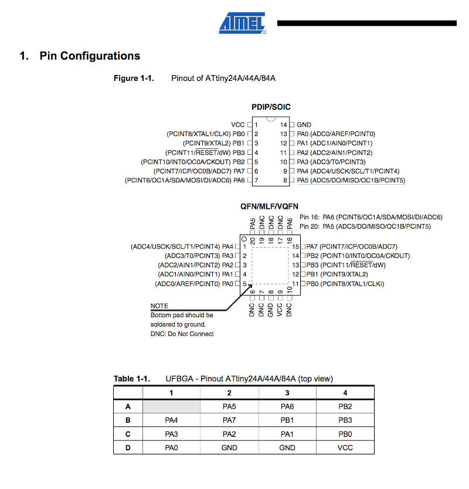
Programming
Because I was a bit confused on how to do it, I decided to list all steps in detail and have some sort of template for my next projects. With what is applicable, I fill the gaps after each step and do while documenting it, and that is what follows below:
- Burn bootloader
- Identify programmer
- Identify bootloader and makefile
- Download bootloader
- Identify commands to burn bootloader
- Burn bootloader
- Burn firmware
- Identify example code:
- Identify commands to compile and burn firmware
- Compile source code
- Adapting makefile to work with my programmer
- Burn firmware
- Identify what fuses to burn
- Burn fuses
- avrdude or Atmel Studio 7 (windows only)
- for that I start by pointing out I want to program a ATTINY44A
- Download makefile
- Bootloader is not going to be used here since there is no USB
- not applicable
- nope
- nope
- There is this code from Prof. Neil
- with all files prior downloaded on one directory, in Linux I rename the file to makefile and run the script to create the firmware (this step I will repeat every time I want to modify the code:
mv hello.ftdi.44.echo.c.make makefile make

- done in previous step

Run:
make program-usbtiny
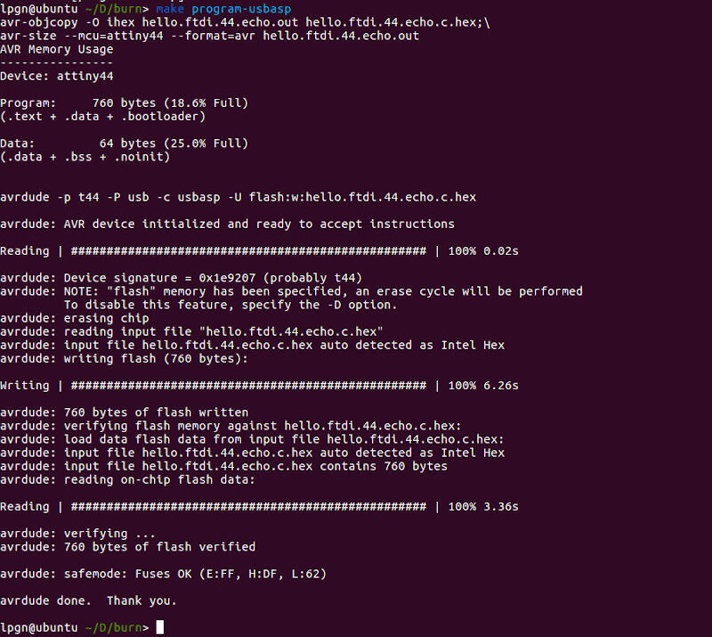
- that was done already in the makefile
Run:
make program-usbasp-fuses
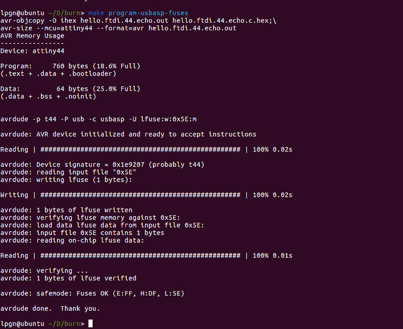
Programming with Arduino IDE
I decided to try Arduino IDE as well to program my board.
In order to do it there are a few steps that should work regardless of the OS
- Add additional board to the boards manager:
- Chose your new added board, in my case ATtiny44
- Chose your processor, same as before
- Select clock, because I am using an external 20Mhz oscillator, I chose "External 20 MHZ"
- Because I want to do some serial monitoring on this board I chose the best match for my FTDI which is "/dev/cu.usbserial-A7032T9C"
- The last step before compiling and burning was to select the programmer, in my case "USBasp"
Paste the following into (Preferences)-(Additional Boards Manager URLs:)
https://raw.githubusercontent.com/damellis/attiny/ide-1.6.x-boards-manager/package_damellis_attiny_index.json
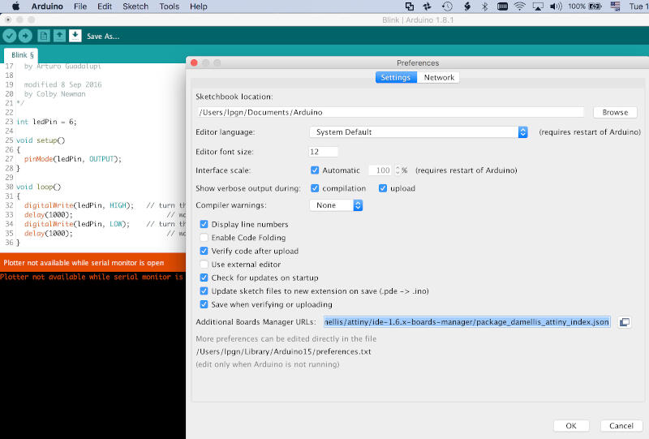
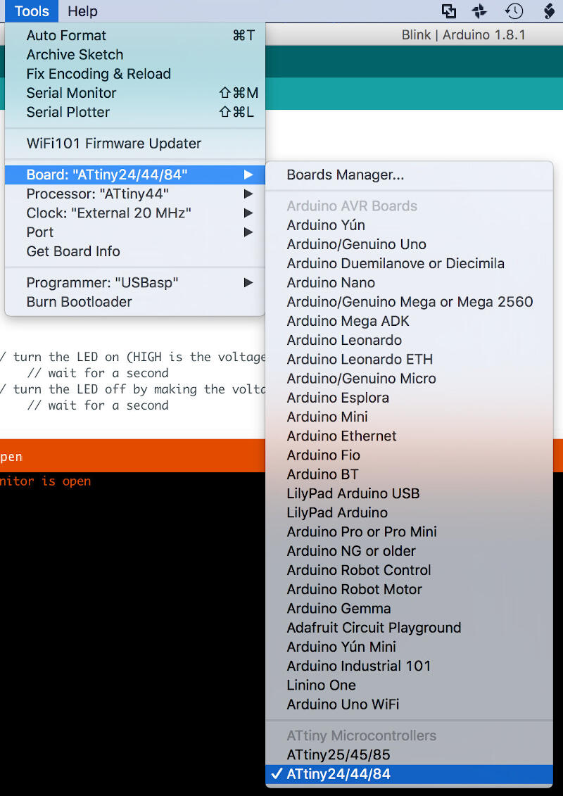
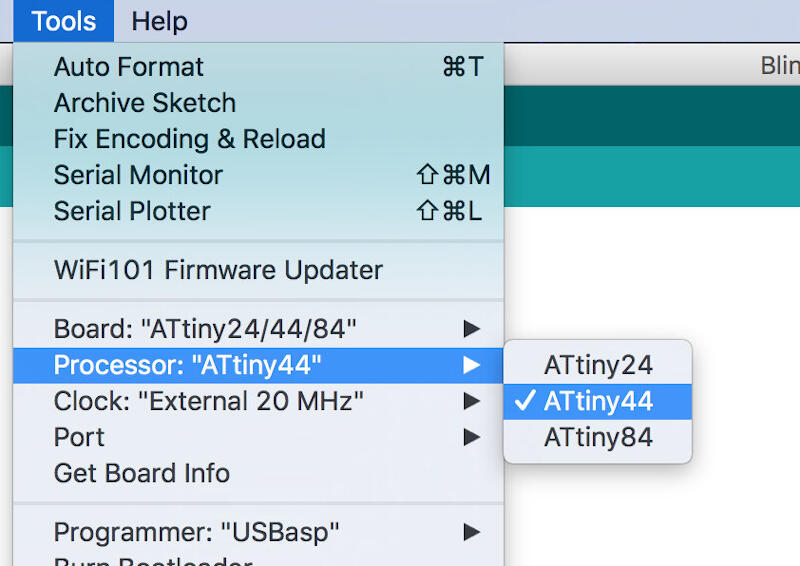
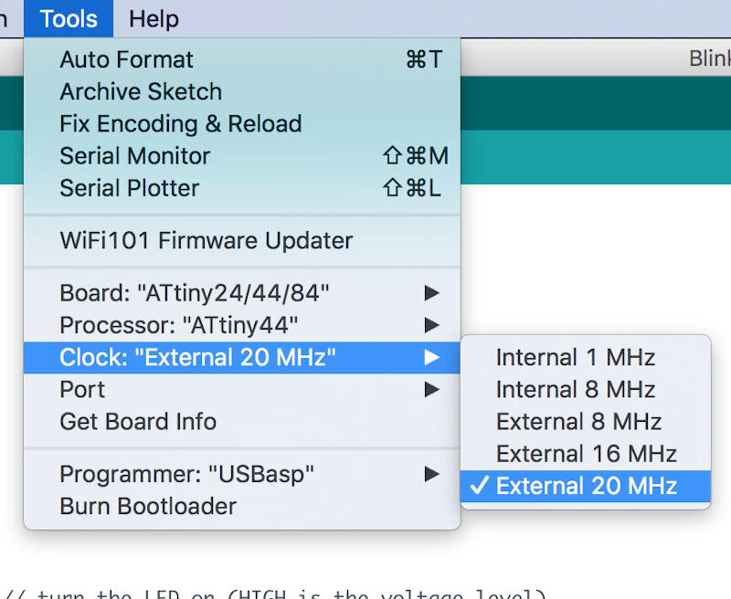
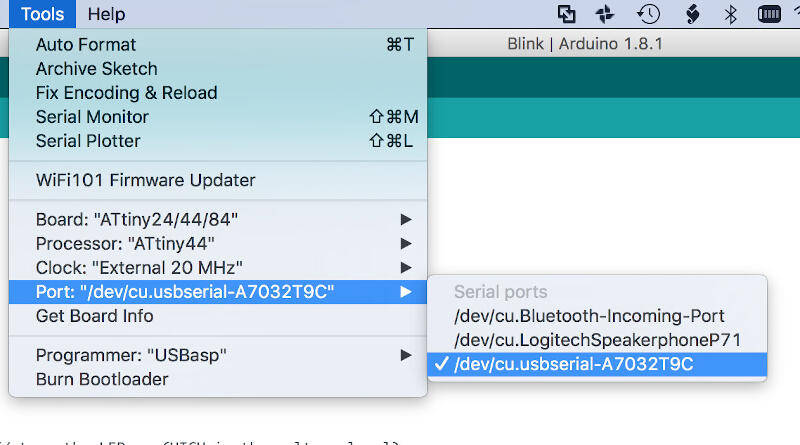
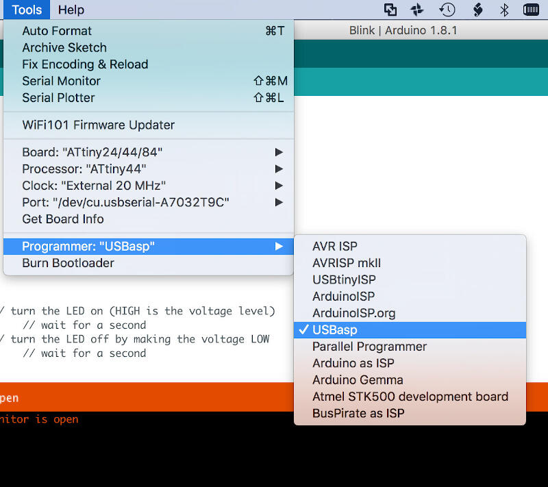
First test
Burning Neil's code "hello.ftdi.44.echo.c"
Here instead of using terminal and avrdude, I used the Arduino IDE as it has a built-in serial monitor.
The results are as follows in the video
Program something else
Now I will try to program it to blink as I press the button.
- Determine the pin where the switch is connected
- Determine the pin where the LED is connected
- Code
- Wait for button
- If button pressed blink LED 3 times
- If not go back to beginning
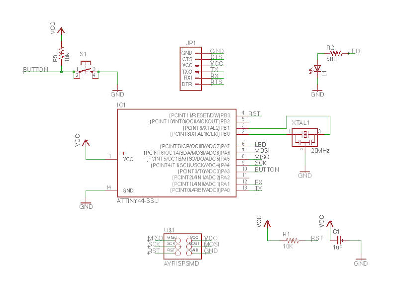
After looking into the PCB schematics I determined the button is connected to pin 10
After looking into the PCB schematics I determined the LED is connected to pin 6
In human language I want something like this:
The problem is I never really coded from scratch, only changed code, so that will be a challenge...
1st iteration
How did I do it
I tried first to customize the Blink code from Arduino IDE with my pin numbers. That did not work
Code without comments below:
void setup() {
pinMode(LED_BUILTIN, OUTPUT);
}
void loop() {
digitalWrite(LED_BUILTIN, HIGH);
delay(1000);
digitalWrite(LED_BUILTIN, LOW);
delay(1000);
}
The reason the first code did not work is because I was using a code built in for the Arduino platform but building my own board. Arduino boards usually have a built-in LED connected to pin 13, not my board! The constant for the Arduino platform to deal with the built-in LED is:
LED_BUILTIN
In the first code I tried to use that constant and failed. In the second code I found empirically by setting a number instead of the constant would make the LED on.
The right code for the ATtiny44 would need to have the pin declared in the beginning with the following code:
const int ledPin = 07;
I realized that after trial and error. Now I understand that the pin number on the data sheet does not correspond to the Arduino pin number that is not the same as in the Arduino platform constant. Of course, after all, this is a customized board, but that's the price you pay for being a noob!
So after empirically finding the right pin number I programmed the board and got it to blink!
Here is the customized code without comments:
const int ledPin = 07;
void setup() {
pinMode(ledPin, OUTPUT);
}
void loop() {
digitalWrite(ledPin, HIGH);
delay(1000);
digitalWrite(ledPin, LOW);
delay(1000);
}
No more empirically finding pins. Here is the ATtiny44 Arduino pinout diagram
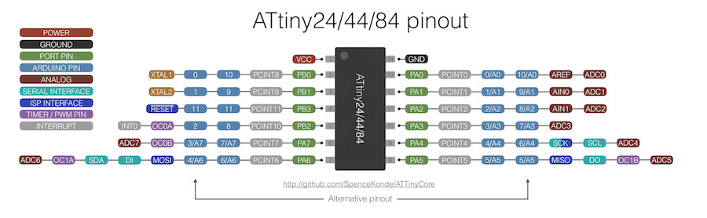
In order to have the button recognized by the board I needed to initialize it too with the following code in the beginning of the sketch:
const int buttonPin = "the pin number here"
Next I had to set the state of the pin with the following code:
int buttonState = 0;
The <0> in the above code could also be defined as
After searching for ATtiny44 Arduino pin. With the right pin number in hand I replaced the pins in the code and it worked! Here is the code.
const int buttonPin = 3;
const int ledPin = 7;
int buttonState = 0;
void setup() {
pinMode(ledPin, OUTPUT);
pinMode(buttonPin, INPUT);
}
void loop() {
buttonState = digitalRead(buttonPin);
if (buttonState, LOW) {
digitalWrite(ledPin, HIGH);
} else {
digitalWrite(ledPin, LOW);
}
}
Schema
Because I lost this board many years ago I can only show how to connect the programmer on a similar board. Just like I did in Electronic Design week.
Programmer FabISP and USBispHere I show how I used the programmers on Output devices, for Another method without the Arduino IDE check Embedded Programming
 USBasp
USBasp
Programming an ATtiny44 board with Arduino using a FabTinyISP or USBtinyISP that I made.
 FabISP
FabISP
In order to change the behavior of the button I simply replaced the constant
if (buttonState == LOW) {
This way the logic of the code is inverted meaning that when the button is depressed the LED is off.
Now I inverted when the LED turns on and off. Here is the code without comments:
const int buttonPin = 3;
const int ledPin = 7;
int buttonState = 0;
void setup() {
pinMode(ledPin, OUTPUT);
pinMode(buttonPin, INPUT);
}
void loop() {
buttonState = digitalRead(buttonPin);
if (buttonState == LOW) {
digitalWrite(ledPin, HIGH);
}else {
digitalWrite(ledPin, LOW);
}
}
Let's see some proof...
Blink 3 times
With a simple addition to the code I changed the behaviour so it blinks 3 times.
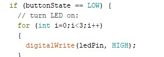Download the code
Hacking the board
I was a bit annoyed my board would not advise me when powered so I decide to solder a red LED and a 22 Ohms resistor and a resistor so if I got the connections wrong I would know and switch it.
That's the before and after
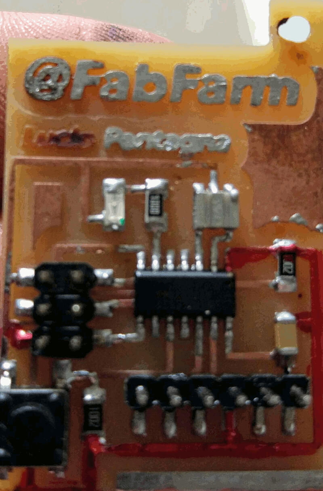
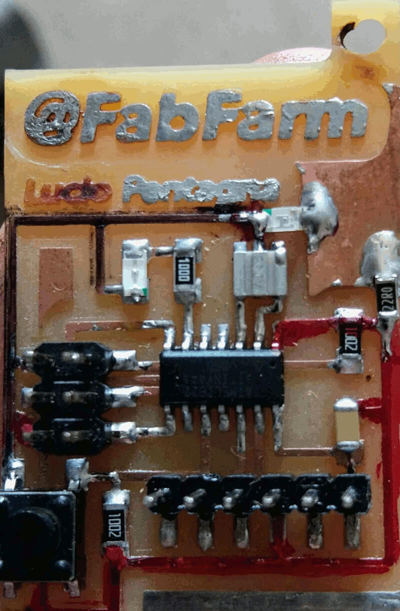
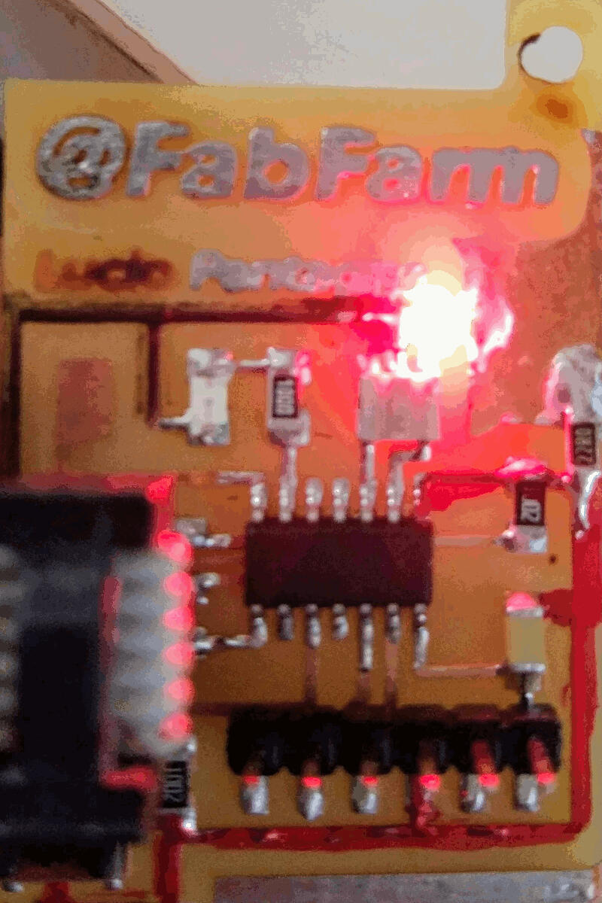